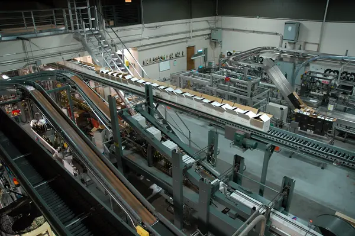
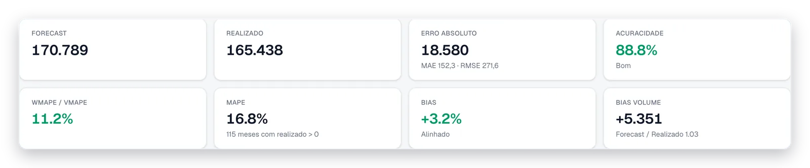
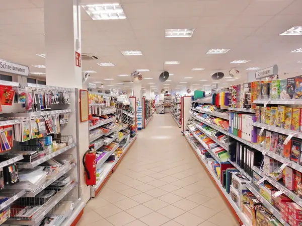
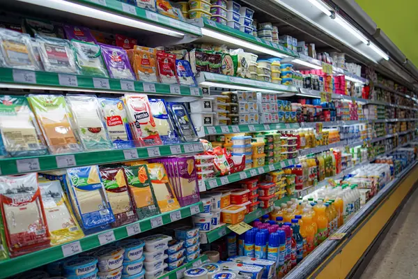

Indústria
Da previsão de demanda ao plano de produção.
- Demanda
- Estoque
- Compras
- Produção
- Forecast por SKU e local
- Estoque de segurança por nível de serviço
- Plano de compras e produção com ordens planejadas
- Visão temporal estilo MRP

A Be Retail conecta Demand Planning, Financial Planning, Inventory Optimization e Supply Planning numa única plataforma, com os mesmos números para comercial, financeiro e operações.
O desafio
Quando os dados estão em sistemas diferentes e o planejamento é feito manualmente, o resultado são decisões mais lentas e menos precisas.
Hoje, o planejamento vem de vários lugares:
Dificuldade em equilibrar disponibilidade e capital.
Impacto direto no abastecimento e nas vendas.
Processos demorados, suscetíveis a erros.
Dificuldade em alinhar metas financeiras.
Foco em resolver problemas, em vez de antecipá-los.
Falta de uma única versão da verdade.
Falta de visibilidade e consolidação de dados.
Estratégia que não chega na operação.
Existe uma forma melhor de planejar.
Veja como o PrevieWeb conecta tudoO aprendizado volta para o próximo forecast
Prever, projetar, atender, executar, medir e aprender, no mesmo ambiente, com os mesmos números para comercial, financeiro e operações. É o S&OP / IBP na prática, sem a complexidade dos grandes projetos.
O realizado volta como aprendizado para melhorar o próximo forecast.

A mesma plataforma de planejamento, ajustada à realidade de cada operação.
Da previsão de demanda ao plano de produção.

O produto certo, no lugar certo, no momento certo.

Planejamento para sazonalidade e lançamento de novos produtos.
Conecte demanda, canais, estoque e resultado financeiro.

O PrevieWeb conecta o forecast de vendas ao plano financeiro, à otimização de estoque e ao planejamento de compras e produção, e fecha o ciclo com o realizado.
Importado com nota de qualidade
Modelo escolhido por série
Receita, custos e caixa
Nível de serviço e estoque ideal
Compras, produção e reposição
Ordens datadas e aprovadas
Forecast x Realizado
Planejamento mais preciso
Os métodos de planejamento das grandes empresas, numa plataforma feita para quem planeja no dia a dia.
Experiência em Demand Planning, S&OP/IBP, Inventory Optimization, Supply Planning e planejamento financeiro.
Plataforma SaaS em nuvem, preparada para integração, segurança e rastreabilidade.
Experiência desenvolvida para usuários de negócio, não apenas especialistas técnicos.
Tecnologia e métodos de grandes organizações, adaptados para empresas em crescimento.
Aplicada a empresas em crescimento: a Be Retail nasceu para tornar tecnologias avançadas de planejamento mais acessíveis às empresas brasileiras.
Nossa experiência combina tecnologia, supply chain, varejo, planejamento e transformação digital, trazendo práticas de grandes organizações para uma plataforma simples, prática e preparada para a realidade de empresas em crescimento.
O PrevieWeb materializa essa visão, conectando Demand Planning, Financial Planning, Inventory Optimization e Supply Planning em um único ambiente.
Decida com os mesmos números em todas as áreas. Não queremos apenas digitalizar o Excel. Queremos transformar a forma como sua empresa planeja.
Diagnóstico do seu planejamento + demonstração utilizando seus dados.